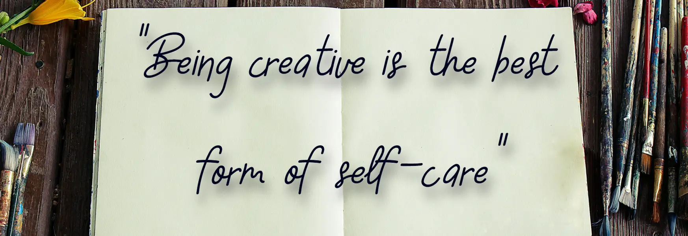
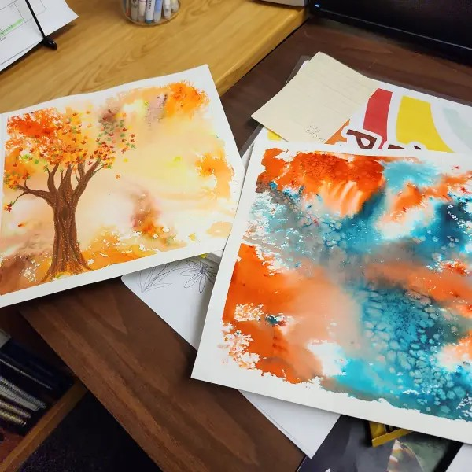

About Us
Welcome! We are the crafty-club based in and around Ogden Utah! We started as three friends who just wanted to get together and work on crafts.This turned into a small tradition with us and soon we began to grow. As we got more people attending each week we gained more skills to share. Now we invite you and all your friends to join us in our weekly crafty meet-up. Each week we choose a movie or audiobook to turn on, and we all work on our own projects and enjoy the camradere that we share. Don't have a project or a skill? Don't even worry about it! We've got people who are more than willing to share their skills with you. Come just check us out and enjoy company, a movie, and some snacks.
Are you still not convinced? Check out the images below to see what kinds of projects have been made during club.

